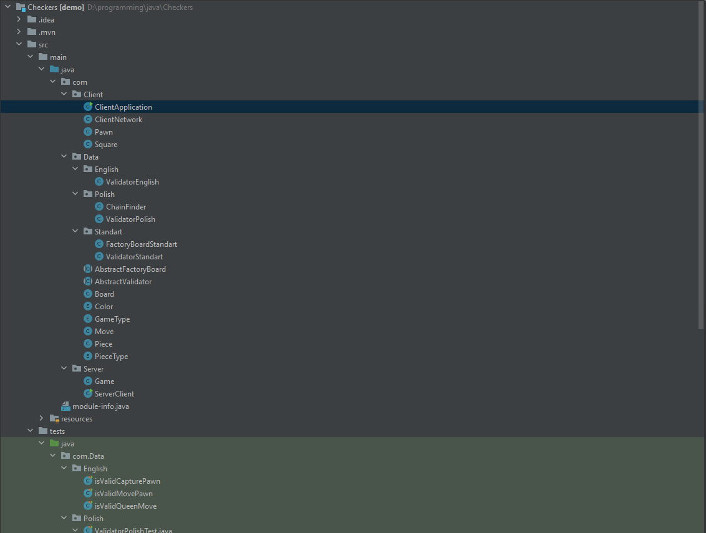
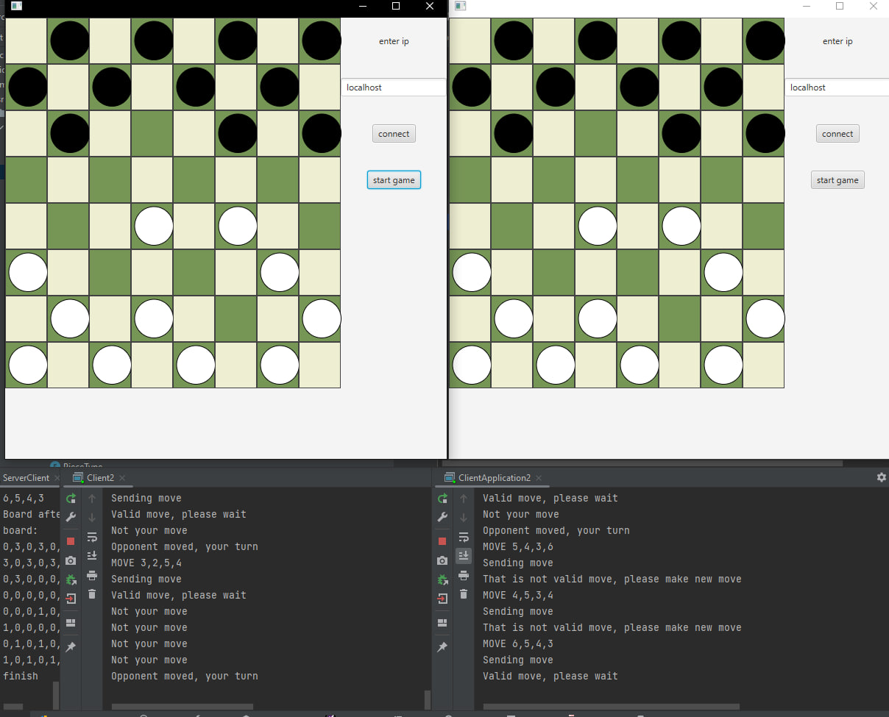

Checkers was a final team project at the end of 3 semester. My friend and I implemeted 3 types of checkers: Russian, English, Polish. You can play that game on different laptops thanks to socket technology.
Checkers


Code Section
Recursion method is responsible for finding the longest bitting chain in Polish version.
protected boolean isAnyPawnCapturePossible(Board board, int startX, int startY){
Piece pieceAtStart = board.getField(startX, startY);
int directionX = 0;
if(pieceAtStart.getPieceColor() == Color.White){
directionX = -1;
}
if(pieceAtStart.getPieceColor() == Color.Black){
directionX = 1;
}
for(int j = -1; j <= 1; j += 2) {
int endX = startX + directionX * 2;
int endY = startY + j * 2;
boolean outOfBounds = outOfBounds(board, endX, endY);
if (outOfBounds || Math.abs(endX-startX) != 2 || Math.abs(endY-startY) != 2) {
continue;
}
Piece pieceAtEnd = board.getField(endX, endY);
if(pieceAtEnd.getPieceType() != PieceType.Blank){
continue;
}
int midX = (startX + endX) / 2;
int midY = (startY + endY) / 2;
Piece pieceAtMiddle = board.getField(midX, midY);
if(pieceAtMiddle.getPieceType() == PieceType.Blank) {
continue;
}
if(pieceAtMiddle.getPieceColor() != playerMark) {
return true;
}
}
return false;
}